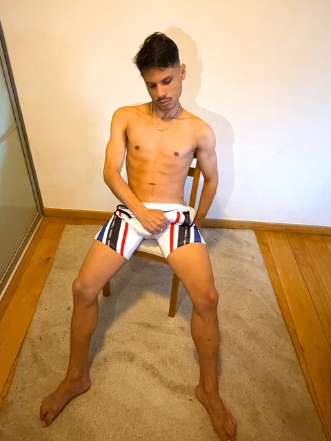
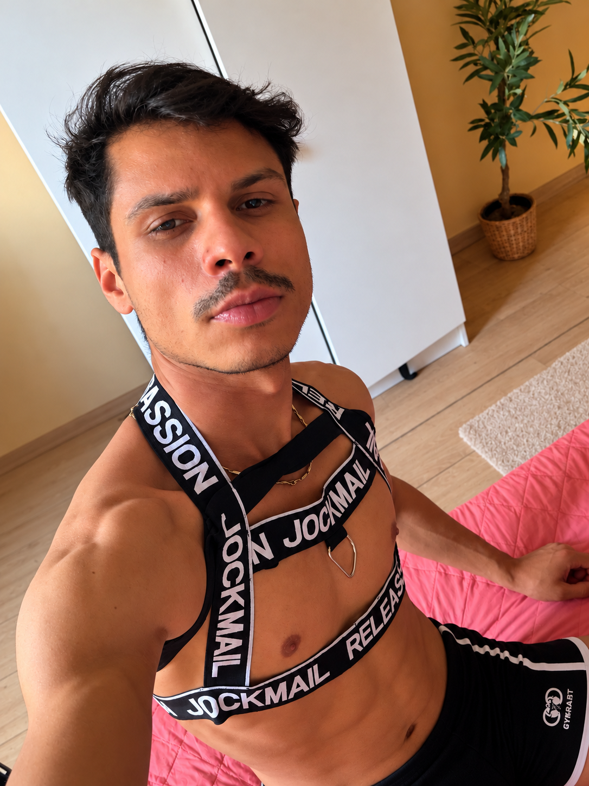
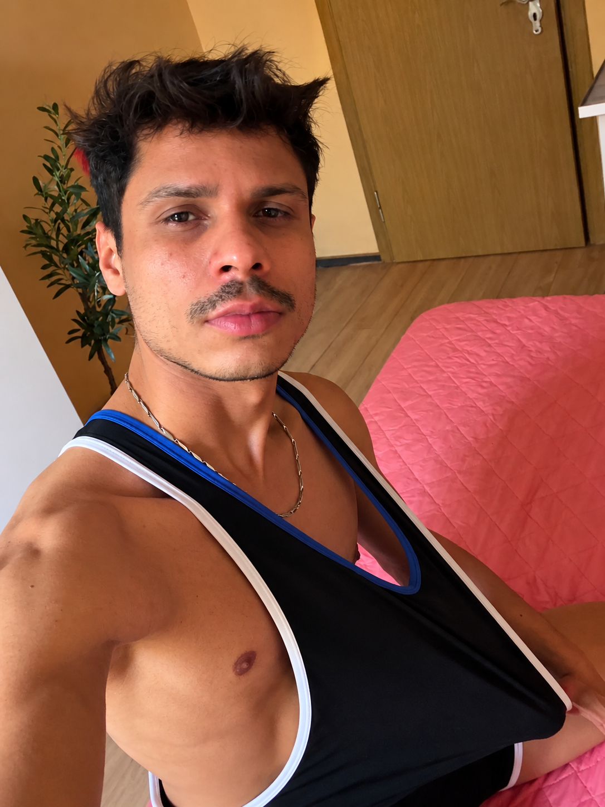

Companhia privada
Boa conversa, presença e atenção personalizada.

LUSSAN PRIVATE · 18+Confirme que tem 18 anos ou mais para continuar.
BRUXELAS · SCHAERBEEK
Acompanhante masculino em Bruxelas
Sou Lussan, brasileiro da Bahia. Recebo em privado para encontros individuais, boa companhia e massagens sensuais.
Encontros 18+ · Por marcação · Discrição


Un univers privé pensé pour le confort, le respect et la tranquillité.
Imagem ilustrativa · Não representa o espaço real de atendimento.
Gosto de encontros com conversa, bom humor e tempo para ficar à vontade. Recebo em Schaerbeek, num espaço privado, e converso contigo sobre preferências e limites antes de combinarmos.
Boa conversa, presença e atenção personalizada.
Um momento tranquilo, pensado para o teu conforto.
Se preferes passar mais tempo comigo, podemos combinar a duração e os detalhes em privado.
Recebo em Bruxelas · Schaerbeek. Para outras cidades, consulta a disponibilidade para deslocações.
Valores e detalhes são confirmados diretamente antes de combinar um encontro.
Escolhe a data, hora e duração e envia o pedido pelo WhatsApp. Aguarda confirmação por mensagem.
Sim, mediante consulta. Deslocações e eventuais custos são combinados antecipadamente.
Não. O pedido não é uma reserva confirmada.
Atendimento privado em Bruxelas. Disponibilidade e detalhes por mensagem.